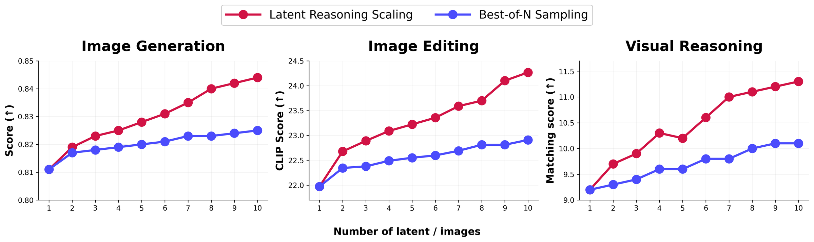
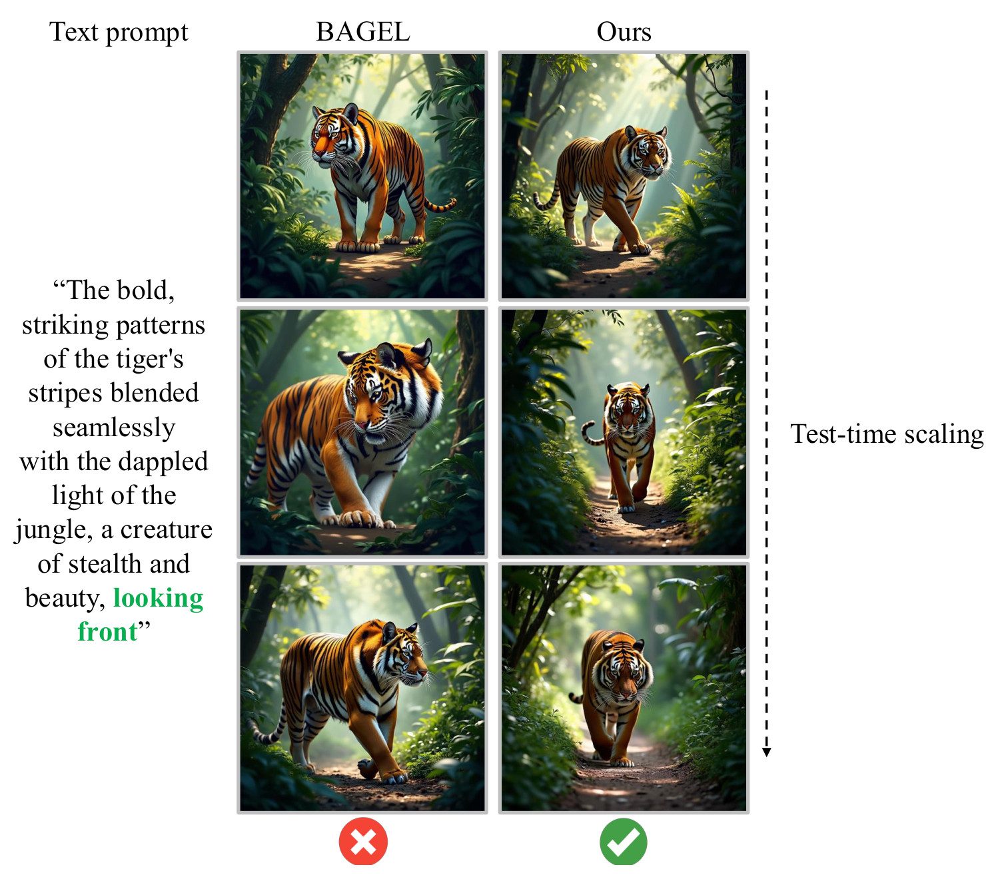
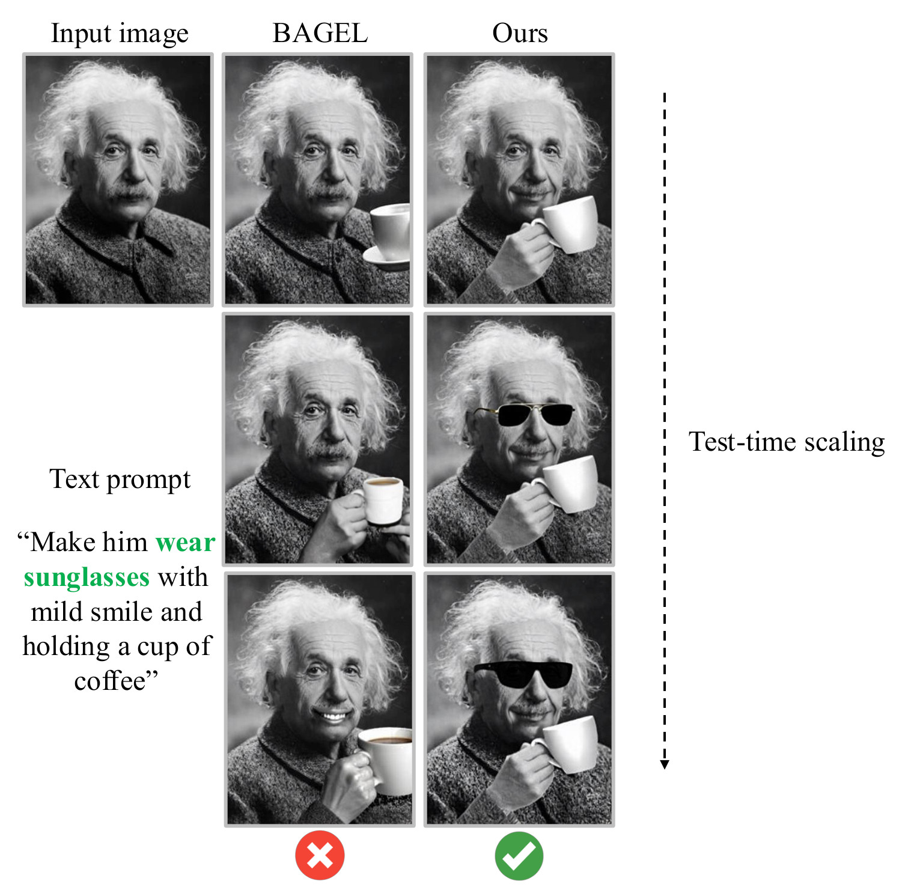

LARC: Latent Reasoning in Continuous Space for Unified Multimodal Models
Unified multimodal models reason in discrete tokens but draw images in a continuous space, so spending more on reasoning does not buy better images. LARC (Latent Reasoning in Continuous space) moves the reasoning into that continuous space: the model interleaves short text spans with latent steps built from its own hidden states. Curriculum fine-tuning turns token-level reasoning into latent reasoning, and self-evolving reinforcement learning then rewards each trace by how much it helps predict the target image, with no ground-truth chains or external critic. LARC improves text-to-image generation, image editing and visual reasoning over its base model and, to our knowledge, is the first reasoning-augmented unified model with clear test-time scaling.
Method
Reasoning-augmented unified models think in discrete tokens while their image module works in a continuous space, so longer reasoning chains mostly rephrase the prompt. LARC lets the backbone reason over its own hidden states instead. After a <latent> token, the last hidden state is fed back as the next input embedding, so the trajectory alternates short text spans with continuous latent steps, and the image module reads the whole trajectory through cross-attention.
![Two-stage training of LARC. Stage 1, supervised fine-tuning: the understanding expert learns to feed its last hidden states back as inputs, producing latent reasoning steps, while the generation expert produces the image. Stage 2, self-evolving reinforcement learning: the policy model rolls out reasoning trajectories for a context such as the prompt An Avocado Chair; a frozen reward model, the Stage 1 model, compares the reasoning-conditioned and reasoning-free distributions of the target image to compute an information-gain reward that drives the policy update.](assets/img/method-overview.png)
Results
LARC is built on BAGEL and trained on 1M interleaved chain-of-thought samples from FLUX-Reason, WEAVE and ScaleEdit. It scores above both its base model BAGEL and the token-reasoning Uni-CoT on every metric below, across text-to-image generation, image editing and multimodal understanding.
The radar charts require JavaScript.
Test-time scaling
Under budget forcing, adding latent reasoning steps at inference improves image generation, image editing and visual reasoning, and LARC pulls ahead of best-of-N sampling as the budget grows. Prior reasoning-augmented unified models do not show this behavior.

Scaling cost
Best-of-N reruns the full generator for every extra image, so its cost grows linearly with N. Latent steps only extend the understanding expert's forward pass: going from 1 to 10 latent steps adds 1.2 seconds per sample.
The line chart requires JavaScript.
Seconds per sample on one NVIDIA A100 with batch size 1 (paper Table 11). Hover the chart to read both methods at a budget.
Qualitative test-time scaling
BAGEL with best-of-N sampling (left column) versus LARC (right column). Rows use N = L = 1, 4 and 10.

